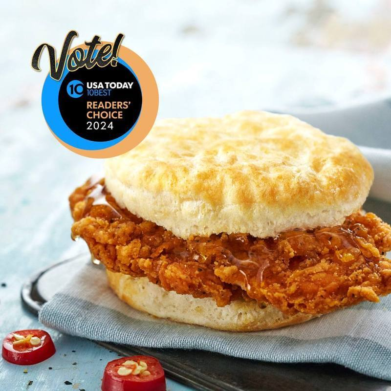

不是麦当劳，也不是温蒂汉堡，由今日美国报(USA Today)办理、读者投票的权威排行指出，美国民众心目中最佳早餐连锁店是名不见经传的「比司吉村」(Biscuitville)，而且是连两年霸榜；今日美国报给的评语是：以比司吉为本的早餐，叫人如何不爱它。
今日美国报指出，比司吉村现烤的比司吉百搭百配，可以配上单纯的培根、鸡蛋、起司，或者炸鸡饼，也可以做成更精致的早餐三明治，如店招牌的「加辣鸡肉及甜椒奶酪饼」。
比司吉村菜色多，有早餐拼盘、多种葛子粥、马铃薯饼或者乡村肉汁，再加上让人沈醉的甜点如蓝莓松饼，无怪乎客人留连忘返，一来再来。
比司吉村两家店1966年成立于北卡罗来纳州柏灵顿，原名「山溪新鲜面包牛奶店」(Mountainbrook Fresh Bread & Milk)，九年后的1975年，第一家名副其实的比司吉村店开张于维吉尼亚州丹维尔(Danville)，北卡州的各店面很快跟进；目前则有50多家店面开设于各地。
今日美国报餐排行榜的第二名是「Del Taco」、第三名「Jack in the Box」，去年第二名的麦当劳退步到第四名，第五名是「Dunkin」。
同一分今日美国报排行榜里，肯德基与Del Taco超越去年霸主的福来鸡(Chick-fil-A)，成为美国整体而言最爱速食店的前两名。今年肯德基与Del Taco有点像黑马；去年他们甚至连前十都排不进去，但今年不仅登榜，还窜到前两名。
另外，塔可钟(Taco Bell)7月底宣布，在其得来速取餐车道扩大使用人工智能语音科技，今年底以前，全美数百家塔可钟店面就会推出这种科技。